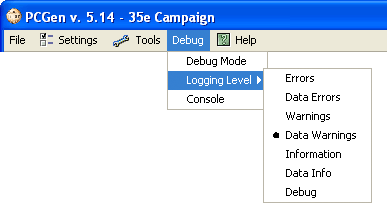
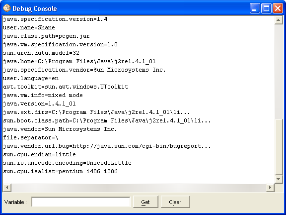

The Debug menu allows the user to start PCGen's self debugging mode. This allows the logging of problems and a display of what is "going on" within the program. This functionality aids the PCGen team in solving problems associated with any errors or messages that occur when running the program. There are three available options: Debug Mode , Logging Level and Console .
The Debug Mode turns on PCGen's logging functionality, setting the logging per the Logging Level command below and turning on an audible alert when error output occurs. Every message is saved at loading and unloading of files, every key stroke and as each option made. This is useful for tracing down the exact time and place an issue has occurred. For instance, if the user was having a problem running a loaded source and PCGen was opening new windows and presenting an error, the Debug program would record where there were faults within the file. Doing so allows the user to pinpoint where in the file an error has occurred instead of hunting through the file to find the problem. (Note this is a selectable option - you have only to select this once and it remains on. The debugger decreases performance when enabled).

The Logging Level sets the level of detail logged by PCGen's debugging mode. The different levels of logging, and the types of problems they list, are as follows:
Error - All exceptions
Data Error - LST error output, e.g. where a token syntax is incorrect, plus all exceptions.
Warnings - Alerts on things that might have an impact on the current session plus data Errors and exceptions.
Data Warnings - Deprecated syntax use and other warnings on LST code plus alerts, data errors and exceptions.
Data Info - LST information such as references to missing items in PRE or CHOOSE tags plus data warnings and errors, alerts and exceptions.
Debug - Code tracing info plus all other previously covered problems.
Changing the logging level through this sub-menu will only effect the logging level for the current PCGen session. To make a persistent change you need to modify the logging.properties file in the pcgen directory. The file has lots of entries, but the last few lines control the default logging level. The names used are slightly different in the file, but there are comments in the file on what names should be used.

The Console option opens up a new "Console" window. This window displays any logging output, as determined by logging level command shown above, made since the console was opened. It also lists all system environment variables that PCGen cares about. If you're having trouble running PCGen, or a campaign doesn't seem to be loading properly, this is the first place to check. We ask that all bug reports include a copy of the console contents since this can provide us with invaluable information.